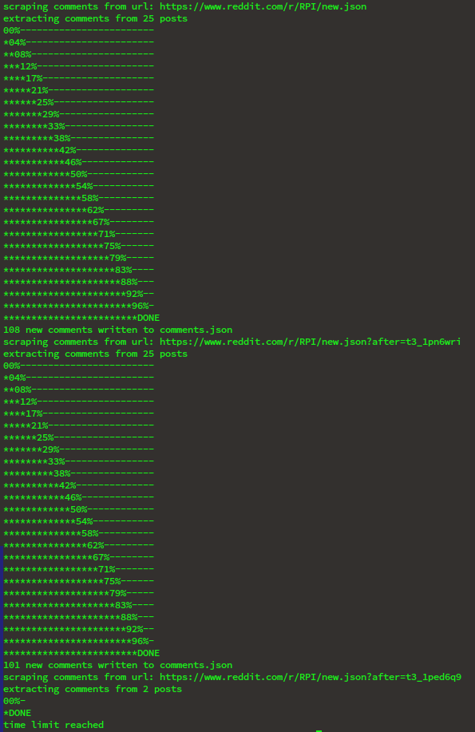
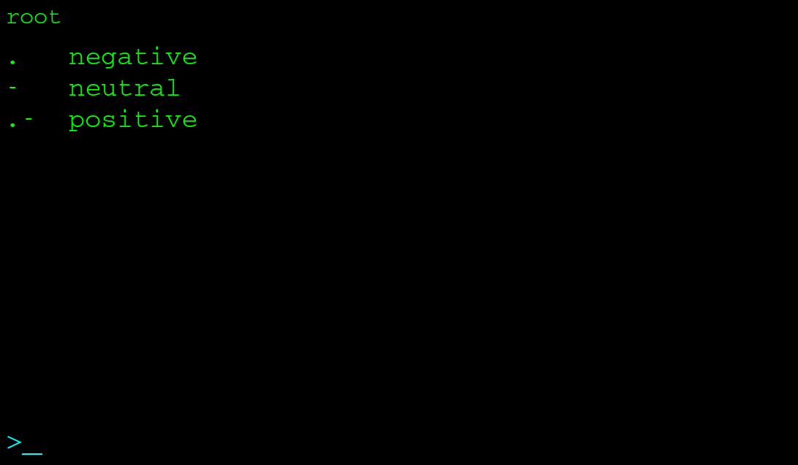
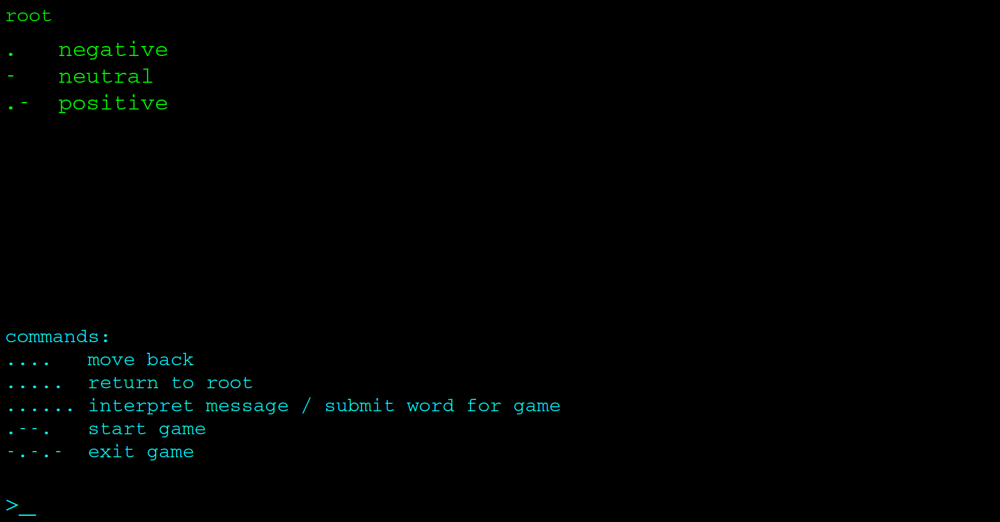
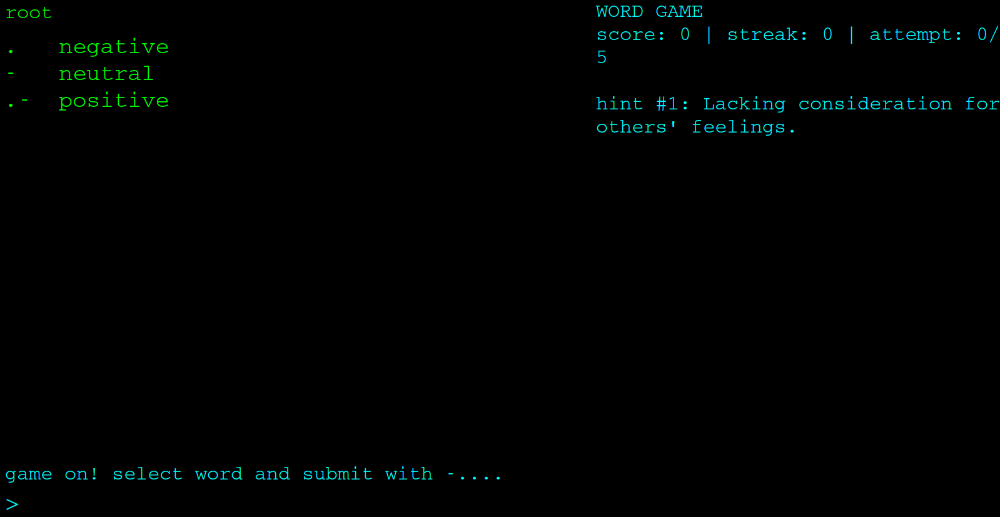
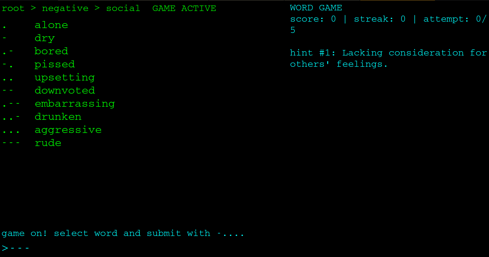
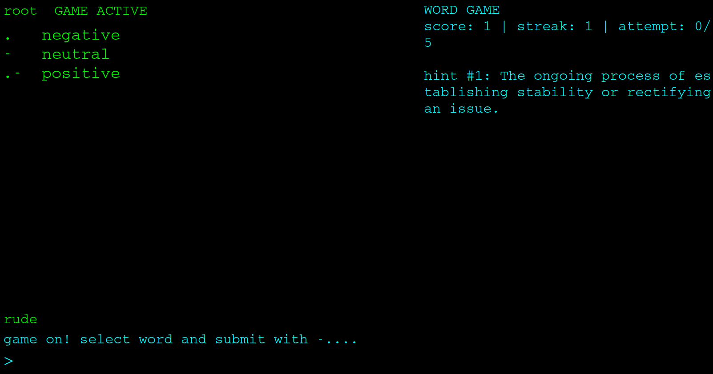
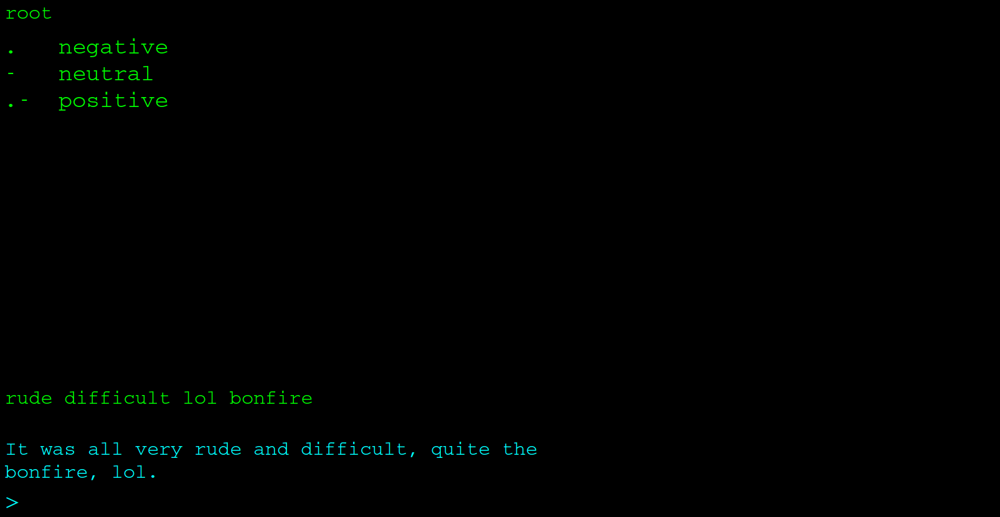
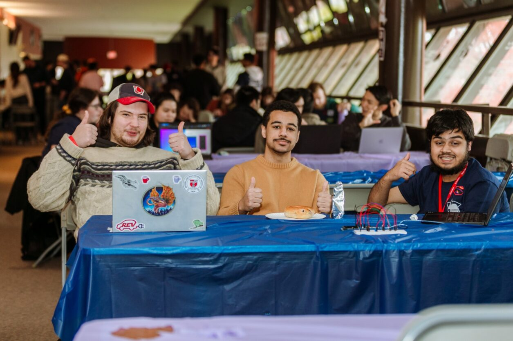

Morse Code Terminal

The theme of this Hackathon was Retro v. Modern. We decided to build a shorthand communication device where morse code is used to navigate a directory style menu system to select keywords, and the Google Gemini API will parse this input into a more readable and grammatically correct sentence.
The original idea was for the morse code input to be handled with an Arduino, the pyserial module, and a few buttons. We experienced major technical difficulties and due to the time constraints of the Hackathon, we ended up with a functional terminal that uses the computer keyboard for input, and a functional Arduino morse code input device as discrete projects that don't function together.
All of the spaghetti code is available here.
-~-
For a shorthand comminication decive, it makes sense to have commonly used words divided into categories that an end user can easily navigate. Since Gemini is handling the final parsing of the input, it made sense to leave out pronouns and let the AI infer context. To get a large amount of commonly used words, I wrote a Python script to scrape the RPI subreddit. It uses json file structure to deal with the dynamic loading nature of reddit. Reddit heavily restricts the use of it's API these days, since Google purchased the right to use Reddit data to train it's AI models. This solution is much slower but just as effective for gathering large amounts of data.
Below is an image of a full run of this scraper. The time limit refers to the age of posts and is set by a global variable in the script.

I scraped the last 90 days of posts and ended up with ~10,000 words. The next task was categorizing them and creating the Python dictionary that would be used for orgainizing everything. I used the Gemini API in order to catagorize them into categories as shown below. This not only saved me countless hours that I did not have, but gave me practice working with the API that I would need later. Negative and Positive share the same categories with Neutral, but were left unexpanded to save space.
Once I had all of the words, I asked Gemini to go through the file and remove any pronouns, as well as overly commonly used words (the, to, etc) If a word passed this filter, it was added to a new json file, along with a counter of how many times it occured in all of the data. Once this file was finished, I had Gemini categorize the words as shown. The final dictionary used for the program is the top 10 words for each category.
└── Root/
├── Negative
├── Positive
└── Neutral /
├── Academic
├── Actions
├── Items
├── Other
├── People
├── Places
├── Resources
└── Social
-~-

From this root screen you can ask for help with SOS in morse code, ...---...How do you know how to ask for help? Not sure, maybe knowing morse code is a prereq for using this thing.
Although if you enter random dots and dashes long enough, you're bound to find it eventually.

From the SOS screen, the existance of a game is revealed.The game began as an afterthougt, something to give the program more functionality and interact more with the Gemini API. However, it's actually really fun. You are given increasingly easier hints as you navigate this word category tree to find the correct word.

Entering in .--. starts the game. Something I will fix if I ever have a large amount of spare time and motivation is the the wrapping of the text for the game interface. Not good.
"Lacking consideration for others feelings",Navigating to Negative -> social for the prompt.
Then selecting "rude" with "---".

Correct guess!

Finally, the initial point of this project. The game had the unintended beneficial side effect of loading up the prompt with random words for the AI to try and interpret. The more you load, the more wild the results are in my experience.The Team!
